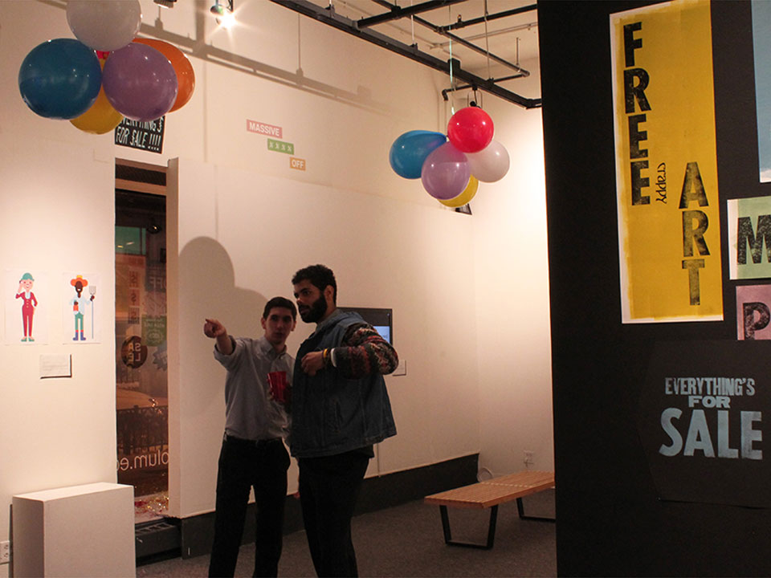

Everything's For Sale
January 2015

Everything’s For Sale is a collaborative, multi-media installation by Chicago art collective, Studio Mosaic. The exhibit portrays how one’s youthful dreams can be lost along the road towards professional achievement. The gallery space invites viewers to contemplate works that question some of today’s most pressing concerns. How does capitalism push an artist to sell out, buy in, and lose faith? How does corporatism affect the creative community? And what would businesses look like if the world economy promoted sustainable culture over consumerism? This Studio Mosaic project responds to how each of us make decisions about what we have, what we value, and what should be for sale.
Artists & Contributors: Timothy Dilich / Skylar Dunn-Lubin / Quan Ika Vu / Athena Mayo / Tyler Nickell / Einxel Reyes / Matthew Robinson / Maxwell Stern /
